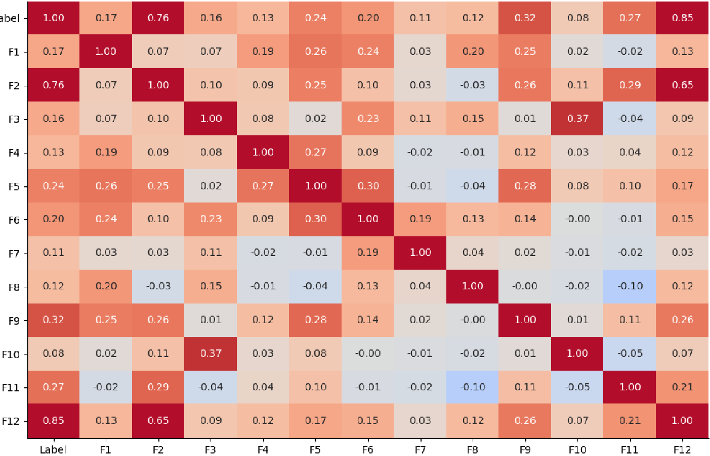
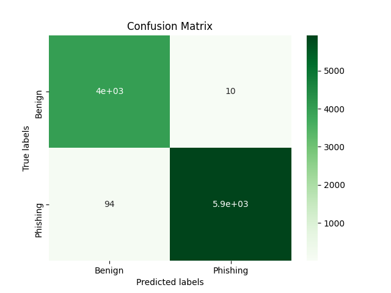
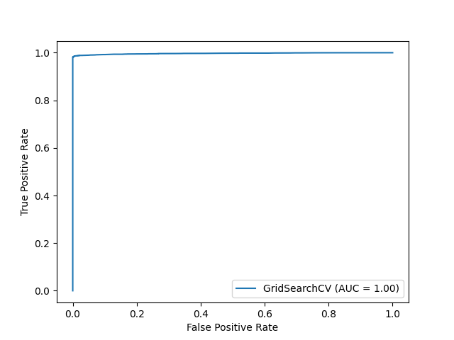

Dissertation
Title: Lightweight URL-based hybrid
anti-phishing detection system
Author: Andrei Butnaru
Supervisor Alexios Mylonas
Overview
- Motivation
- Aim and approach
- Design and implementation
- Performance assessment
- Evaluation and comparison
- Demonstration and Closing statement
Motivation
- Its popularity in the current threat landscape
- "Humans are inevitably the weakest"
- Impressed by what machine learning can achieve
- Interested in the human factor of security
- Improve mass protection against phishing
Aim and Objectives
- Evaluate classification accuracy of GSB
- Design a solution meant to outperform it
- Implement and optimise the solution until it
accomplishes the aim.
Approach
- Through previous research
- Through browser embedded solutions
- Considering intender operational environment
- With the intention of contributing
Design
- Reduced resource consumption
- Potential for quick prediction
delivery
- List-based module
- Machine learning module

Implementation
- Threshold needed
- GSB performance assessor
- The aim is to surpass the results
Implementation
Machine learning module
- Experimented with a wide range of algorithms
- Naive Bayes
- Decision Tree and Random Forest
- Support Vector Machine
- Multilayer Perceptron
Implementation
Feature set
- Brings together features
proposed by the literature
- Original take on the compilation
- The most performant
feature is original

Performance assessment
- Satisfactory performance
- Models not tuned
- Feature set not optimised
| Model |
F1-Score |
| Naive Bayes |
98.37% |
| Decision Tree |
98.74% |
| Random Forest |
98.86% |
| SVM |
98.76% |
| MLPC |
97.21% |
Performance enhancement
- Re-shaped feature set
- Performed hyperparameter
tuning
- Rinse and repeat
| Model |
F1-Score |
| Random Forest |
98.92% |
| SVM |
98.87% |
| MLPC |
98.76% |
Model selection
| Model |
Initial Acc. |
Opt. Acc. |
| Test data |
92.48% |
99.29% |
| Phishtank |
82.11% |
95.67% |
Model selection
0.10 False positive rate and 0.94 False negative


Comparison
- Measure aim accomplishment through
comparison
- Place the performance in the landscape
of literature solutions
Comparison
| Browser Plugin |
Accuracy |
| Artefact |
99.29% |
| IPDPS |
98.55% |
| CANTINA+ |
98.06% |
| Phishdentity |
97.2% |
| PhishTester |
97.1% |
| PhishDef |
97% |
| PhishGuard |
94% |
| PhishIdentifier |
92% |
| PhishTackle |
91.3% |
Closing statement
-
The objectives have been fully accomplished
-
The aim has beed achieved and the expectations
surpassed
-
Created a highly-effective original feature
-
Produced an artefact easily wrappable in a
browser extension
Thank you for your attention